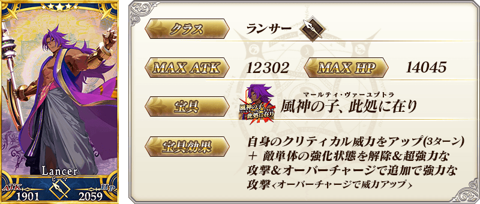
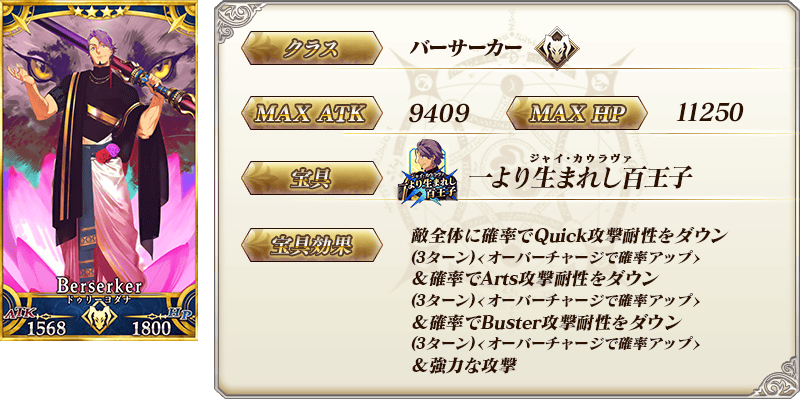
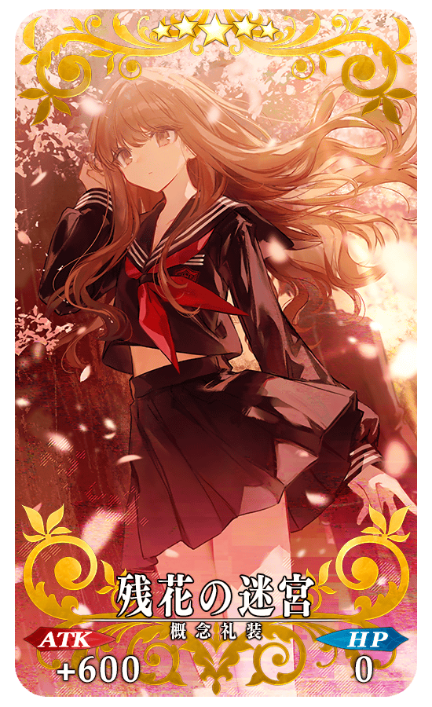
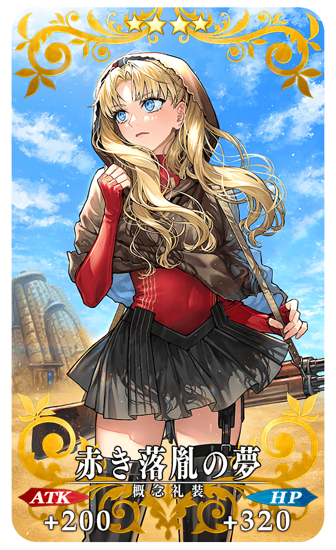

◆「平面之月 怖軍Pick Up召喚」期間◆
期間:2023年6月18日(日) 17:00～7月2日(日) 11:59
【Pick Up對象】
▼故事召喚從者
・★5(SSR)怖軍
・★4(SR)難敵
為了記念「奏章Ⅰ 虛數羅針內界 平面之月」的開幕，新登場從者「★5(SSR)怖軍」「★4(SR)難敵」Pick Up！
並且，3種今後在故事召喚追加的新概念禮裝先行登場！
※就算未滿足主線關卡開放條件的狀態也能進行本召喚。
Pick Up期間中，Pick Up對象從者的出現機率提升！
詳情請在聖晶石召喚畫面左下的召喚詳細確認。
11次召喚中確定1張★4(SR)以上和確定1位★3(R)以上的從者！ ※確定★4(SR)以上包含從者和概念禮裝。 ※本頁面皆為開發中圖片。會有與實際圖片相異的情況。
並且，3種今後在故事召喚追加的新概念禮裝先行登場外，翻新★4(SR)概念禮裝的一部份陣容！
▼先行登場永久概念禮裝
・★5(SSR)懺悔の箱
・★5(SSR)残花の迷宮
・★4(SR)赤き落胤の夢
【重要】
◆關於「確定召喚」功能◆
・期間限定Pick Up召喚中，在329次以內未召喚到Pick Up對象★5(SSR)從者情況，只限1次可在進行第330次的召喚時「確定召喚」必定1位Pick Up對象★5(SSR)從者。
・在同時間舉辦多個期間限定Pick Up召喚的情況，各召喚分別(每個召喚畫面頁面)計算召喚次數。另外，以每日交替Pick Up召喚的內容切換情況，各自分別計算召喚次數。舉例，每天23:00時間點變更召喚內容的Pick Up召喚情況，請注意在召喚內容變更的時間點會重置召喚次數的計算。
・請注意期間限定Pick Up召喚中滿足以下任何條件的話，在召喚畫面會顯示「Pick Up對象確定召喚已結束。(ピックアップ対象の確定召喚は終了しました。)」，該召喚中「確定召喚」功能變成無效。
・第329次前召喚到Pick Up對象★5(SSR)從者
・在第330次確定召喚到Pick Up對象★5(SSR)從者
・召喚次數在期間限定Pick Up召喚中用有償聖晶石、無償聖晶石、呼符進行召喚時都會計算。目前的召喚履歴可於該召喚畫面內確認。
※每10次召喚進行的「＋1次獎勵召喚」與用有償聖晶石進行的1天1次限定「1次召喚」也在計算的對象。
※每個召喚內容會分開計算「＋1次獎勵召喚」與1日1次限定的「1次召喚」。請注意在變更召喚內容那天的23:00，「＋1次獎勵召喚」和「1次召喚」的計算會被重置。
※透過有償聖晶石1個「1次召喚」的計算，也會在每天3:00重置。
・在進行11次召喚時滿足「確定召喚」功能條件的情況，在施行11次召喚中會確定召喚1位Pick Up對象★5(SSR)從者。屆時，11次召喚中保障的確定1張★4(SR)以上與確定1位★3(R)以上的從者會另外生效。
・期間限定Pick Up召喚結束後，無法繼承召喚次數到別的召喚。
・故事召喚、友情點數召喚為「確定召喚」功能的對象外。
◆關於1天1次限定的有償聖晶石召喚◆
※可以1天1次限定於期間限定召喚用有償聖晶石1個進行「1次召喚」。
※透過有償聖晶石1個的「1次召喚」，每天3:00重置。
※透過有償聖晶石1個的「1次召喚」對應的聖晶石召喚有好幾個的情況，各個召喚中1天各進行1次有償聖晶石1個的「1次召喚」。
※請注意就算進行透過有償聖晶石1個的「1次召喚」，不包含在1次獎勵的計算。
※聖晶石購入時賦予的「附贈(オマケ)」是做為無償聖晶石而不包含在有償聖晶石的個數，請注意別搞錯。另外，持有聖晶石的細項，可從持有道具一覧確認。
◆關於透過召喚獲得從者硬幣◆
在期間限定召喚、故事召喚、友情點數召喚中入手從者時，可獲得該從者的從者硬幣。
◆有關從者的注意◆
※本召喚的Pick Up期間中，透過故事進行所追加的下述從者就算通過各章前也能入手。另外，自2023年6月18日(日) 17:00，在通過「奏章Ⅰ 虛數羅針內界 平面之月」後追加到故事召喚。
・★5(SSR)怖軍
・★4(SR)難敵
◆有關概念禮裝的注意◆
※下述的概念禮裝的出現機率不會提升。另外，自本召喚的舉辦期間結束後，追加到故事召喚。
・★5(SSR)懺悔の箱
・★5(SSR)残花の迷宮
・★4(SR)赤き落胤の夢
※隨著翻新，下述的概念禮裝於本召喚為召喚對象外。另外，本召喚的舉辦期間結束後，變成會從教學召喚被抽出，不會從故事召喚被抽出。
・★4(SR)コードキャスト
故事召喚從者





|
★★★★★SSR
◆最大解放時效果◆ |
|  |
★★★★★SSR
◆最大解放時效果◆ |
|  |
★★★★SR
◆最大解放時效果◆ |

介紹在本召喚Pick Up的2位新從者寶具演出！
※「★5(SSR)怖軍」的寶具在OverCharge時會變化演出。
【★5(SSR)怖軍(OverCharge時)】
【★4(SR)難敵】
【6月25日(日) 17:00追記】
其他還有，「平面之月 杜爾嘎Pick Up召喚」等的情報公開中！
關於詳情，請自下述橫幅確認。
■「平面之月 杜爾嘎Pick Up召喚」詳細情報

■「奏章Ⅰ 虛數羅針內界 平面之月」詳細情報

■「平面之月 迦摩(Assassin)Pick Up召喚」詳細情報